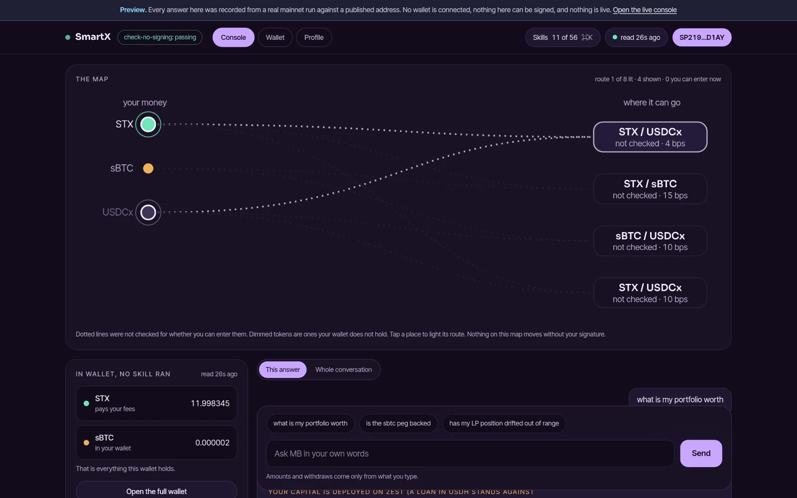
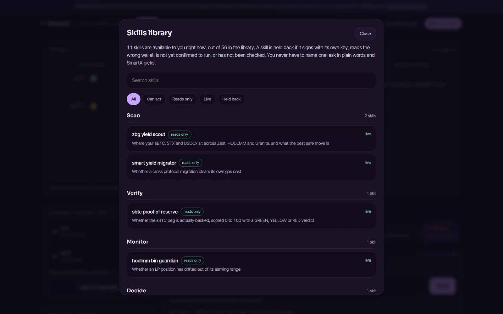
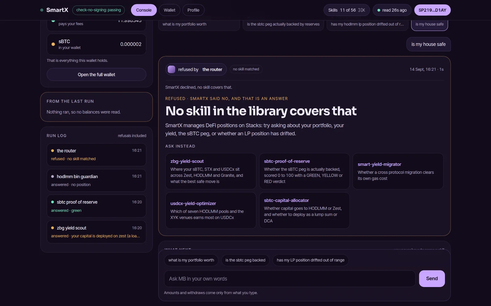

0.535225
USDCx arrived
At most 2 STX could leave. At least 0.528285 USDCx had to come back.
An AI assistant that finds where your coins can earn and prepares the move. You approve every step in your own wallet.
The demo needs no wallet and no password. The app itself is password protected for now.
Real questions and the answers SmartX gave, recorded in its demo. Pick one to see which tool answered and what it found.
Nothing on this page can be signed.



In plain words, like "where can my USDCx earn?". You never pick a tool, and nothing is approved in advance.
SmartX reads live data, compares the options, and tells you what it found, including when the answer is no.
In your own wallet. SmartX never holds your keys. On Stacks the limits you see are enforced by the chain itself.
Today, putting your coins to work means comparing lending apps, pools and staking, working out the risks, and signing transactions that are hard to check. SmartX does the reading for you, in one conversation, and shows you exactly what you are approving.
SmartX starts on Stacks, the layer that brings DeFi to Bitcoin, where its first transactions were signed. The idea is the same on any chain: you ask, it prepares, you approve in your own wallet. More chains will come one at a time; none has a date yet.
Ask in plain words and SmartX picks the right tool from the 11 it can use today. Everything runs on Stacks mainnet with real money.
The console. Your tokens on the left, where they could go on the right.
A button can fill this box. It can never send. Only your wallet signs.
On Stacks the chain itself enforces these limits. The minimum is worked out from the first signed swap, 12 September 2026. Not a live quote.
When a move is unsafe or does not add up, SmartX refuses it, says why in plain words, and suggests what to ask instead.
Today SmartX charges nothing, and there is no fee in the product.
When a check refuses an action, SmartX earns nothing from telling you so.
It works on mainnet, in public.
Prove every move, then harden it.
A business that earns only when it helps.
Bring the next million people to Bitcoin finance.
Backed by the Artizen community through the LAB Open Source Builders Fund of Let Africa Build.
Read The Machine That Says No on Artizen, or back SmartX there.
No wallet needed to look around. Every transaction is signed by you, in your own wallet.